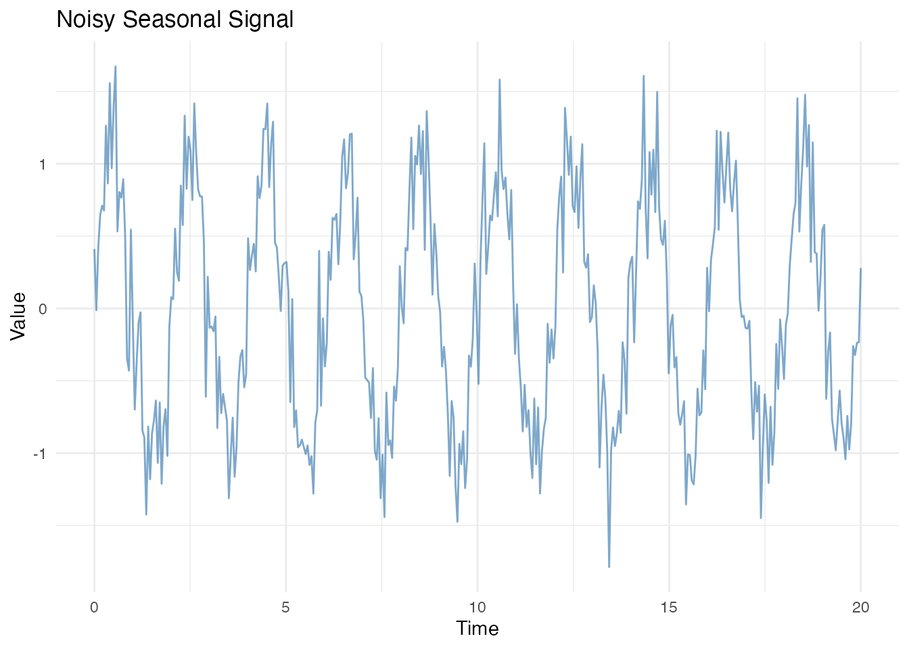
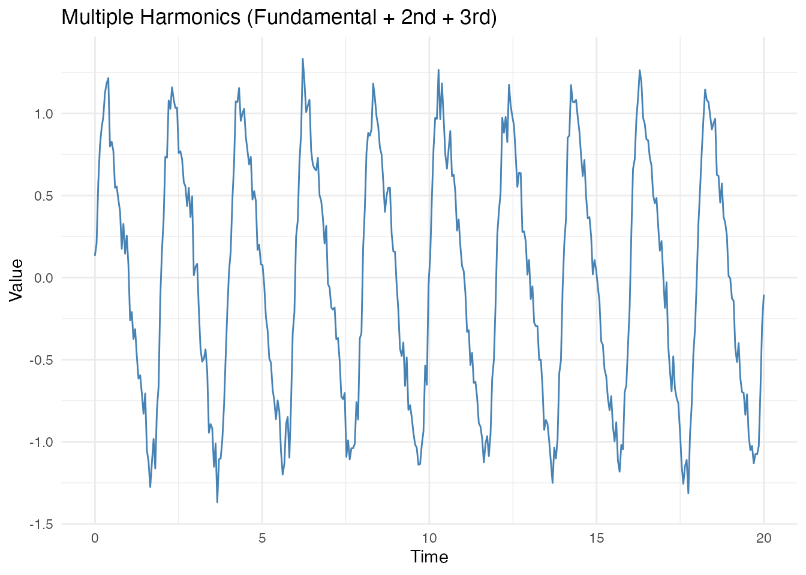
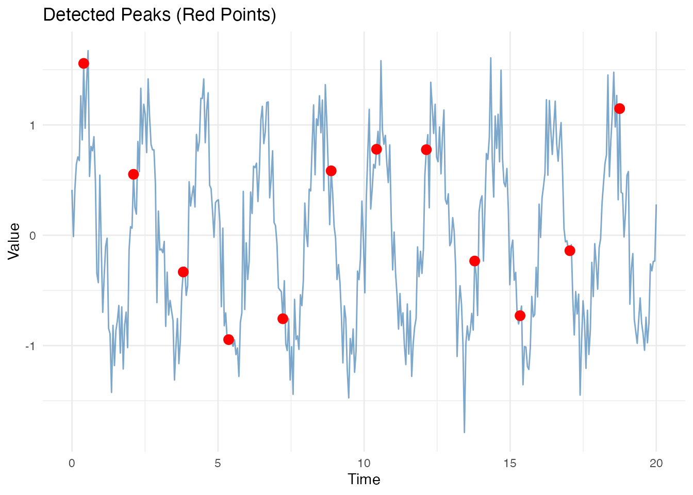
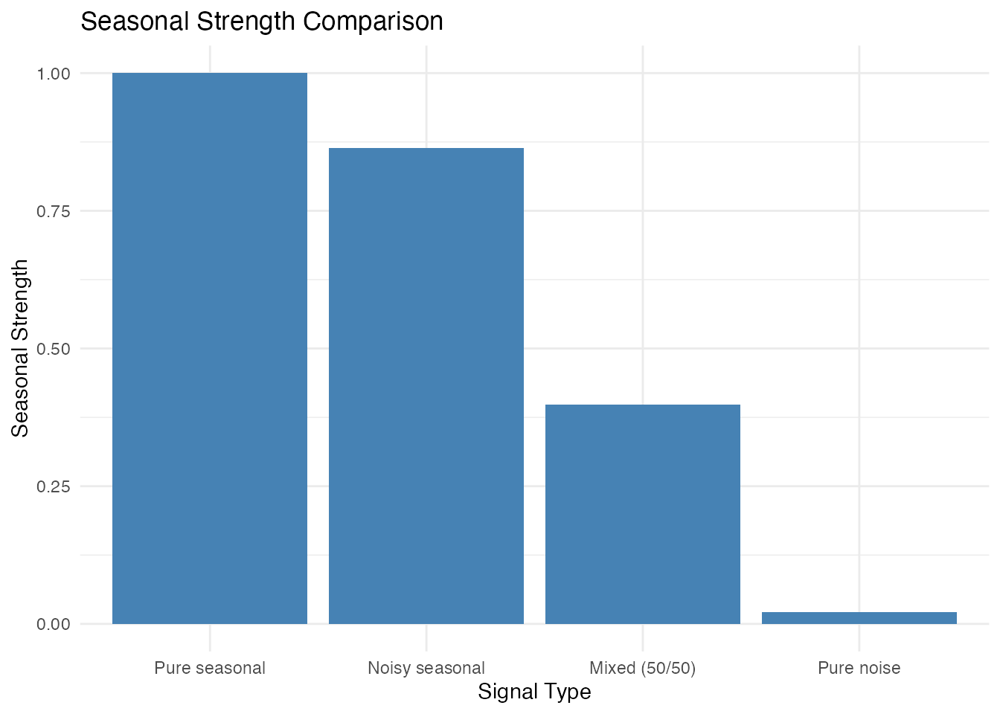
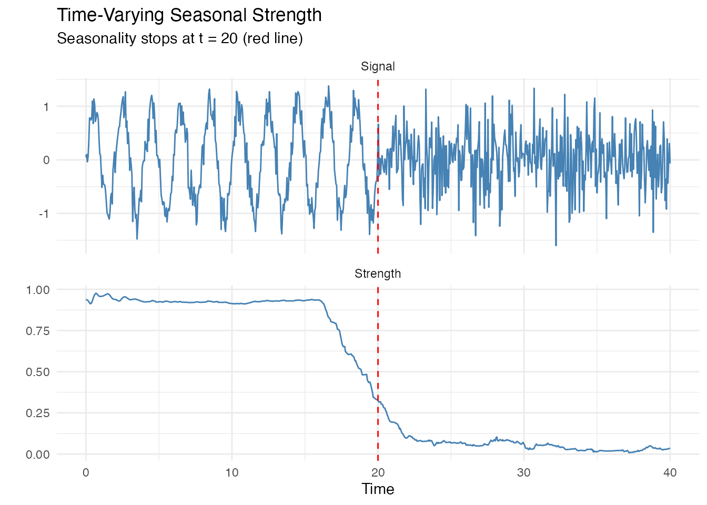
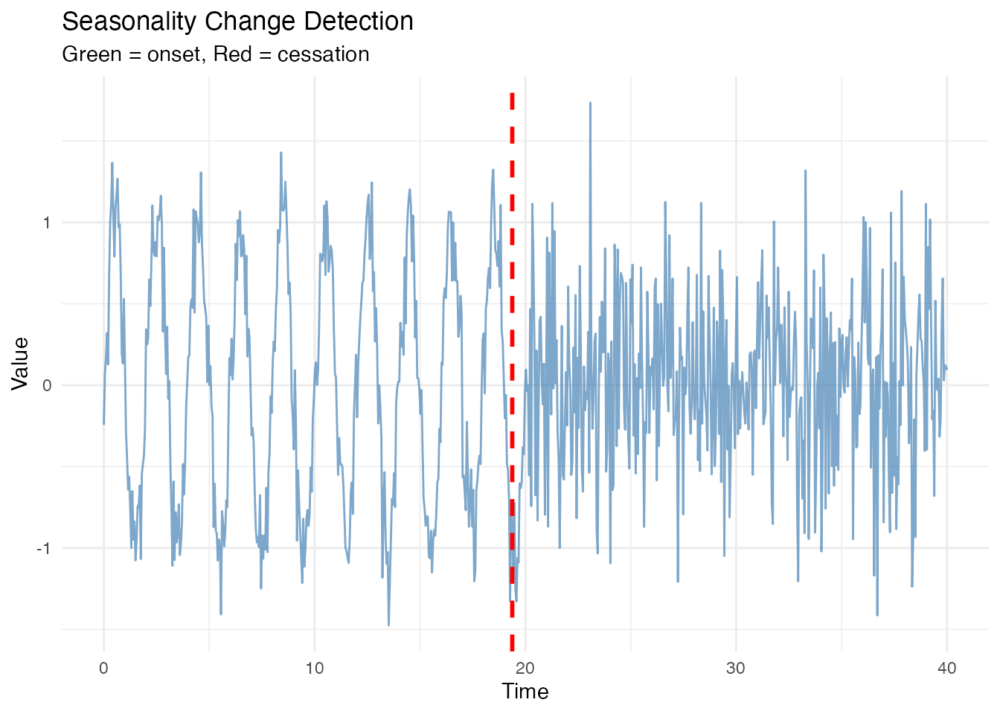
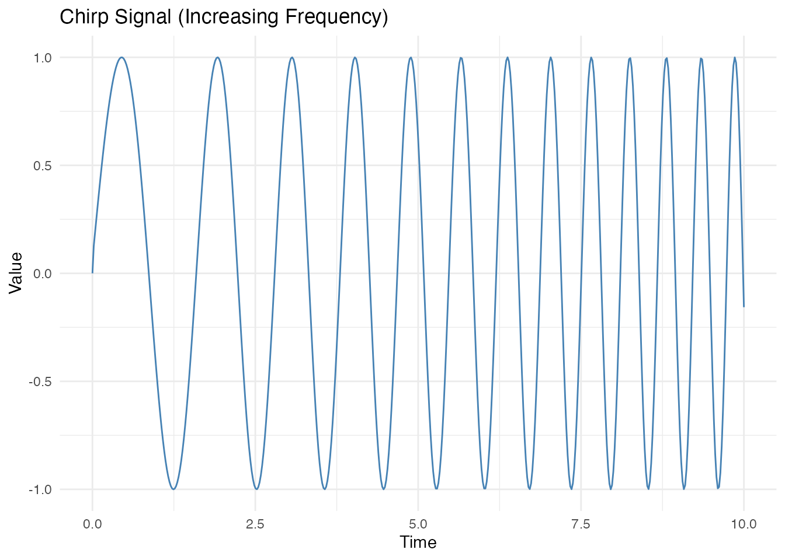
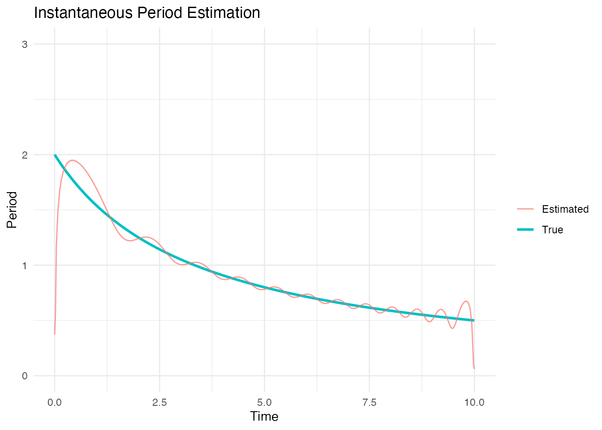
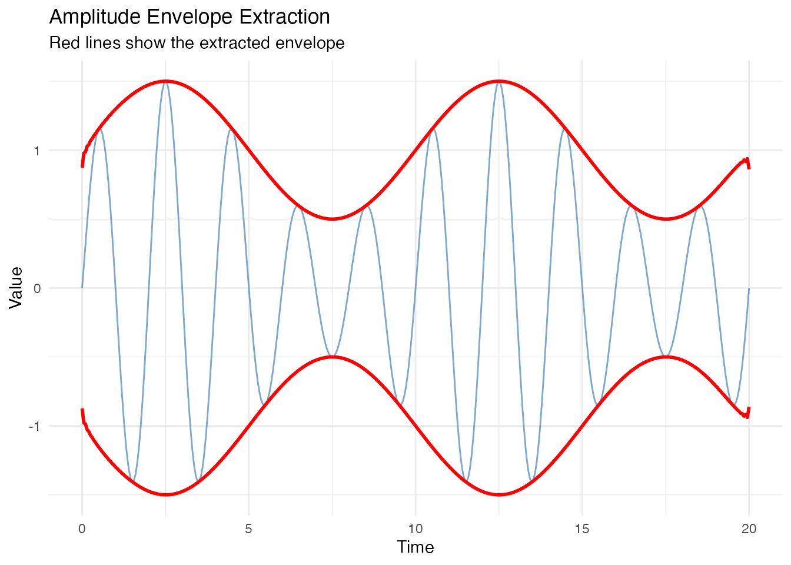

Introduction
Seasonal patterns are ubiquitous in functional data: temperature cycles, biological rhythms, economic fluctuations, and many more. This vignette demonstrates the seasonal analysis capabilities of fdars:
- Period estimation: Determine the seasonal period from data
- Peak detection: Find and characterize seasonal peaks
- Seasonal strength: Quantify how seasonal a signal is
- Change detection: Detect when seasonality starts or stops
- Instantaneous period: Handle drifting or varying periods
Generating Seasonal Data
Let’s create several types of seasonal data to demonstrate the tools.
Pure Seasonal Signal
# Time grid: 10 complete cycles of period 2
t <- seq(0, 20, length.out = 400)
period <- 2
# Pure sine wave
X_pure <- sin(2 * pi * t / period)
fd_pure <- fdata(matrix(X_pure, nrow = 1), argvals = t)
# Plot
df <- data.frame(t = t, y = X_pure)
ggplot(df, aes(x = t, y = y)) +
geom_line(color = "steelblue") +
labs(title = "Pure Seasonal Signal (Period = 2)",
x = "Time", y = "Value") +
theme_minimal()
Noisy Seasonal Signal
# Add noise
X_noisy <- sin(2 * pi * t / period) + rnorm(length(t), sd = 0.3)
fd_noisy <- fdata(matrix(X_noisy, nrow = 1), argvals = t)
df <- data.frame(t = t, y = X_noisy)
ggplot(df, aes(x = t, y = y)) +
geom_line(color = "steelblue", alpha = 0.7) +
labs(title = "Noisy Seasonal Signal",
x = "Time", y = "Value") +
theme_minimal()
Multiple Harmonics
Real seasonal patterns often have multiple harmonics (e.g., yearly + half-yearly).
X_multi <- sin(2 * pi * t / period) +
0.3 * sin(4 * pi * t / period) + # 2nd harmonic
0.1 * sin(6 * pi * t / period) + # 3rd harmonic
rnorm(length(t), sd = 0.1)
fd_multi <- fdata(matrix(X_multi, nrow = 1), argvals = t)
df <- data.frame(t = t, y = X_multi)
ggplot(df, aes(x = t, y = y)) +
geom_line(color = "steelblue") +
labs(title = "Multiple Harmonics (Fundamental + 2nd + 3rd)",
x = "Time", y = "Value") +
theme_minimal()
Period Estimation
FFT Method
The FFT method uses the periodogram to find the dominant frequency.
# Estimate period using FFT
est_pure <- estimate_period(fd_pure, method = "fft")
print(est_pure)
#> Period Estimate
#> ---------------
#> Period: 2.0050
#> Frequency: 0.4988
#> Power: 0.4977
#> Confidence: 199.5847
est_noisy <- estimate_period(fd_noisy, method = "fft")
cat("\nNoisy signal:\n")
#>
#> Noisy signal:
print(est_noisy)
#> Period Estimate
#> ---------------
#> Period: 2.0050
#> Frequency: 0.4988
#> Power: 0.5126
#> Confidence: 171.9300The confidence value indicates how pronounced the dominant frequency is. Higher confidence means clearer periodicity.
Autocorrelation Method
The ACF method finds the first peak in the autocorrelation function.
est_acf <- estimate_period(fd_noisy, method = "acf")
print(est_acf)
#> Period Estimate
#> ---------------
#> Period: 2.0050
#> Frequency: 0.4988
#> Power: 0.7835
#> Confidence: 0.7835Peak Detection
Peak detection identifies local maxima in the data. This is useful for characterizing seasonal patterns and estimating period from peak-to-peak distances.
Basic Peak Detection
peaks <- detect_peaks(fd_noisy)
print(peaks)
#> Peak Detection Result
#> ---------------------
#> Number of curves: 1
#> Total peaks found: 85
#> Mean period: 0.2291With Minimum Distance Constraint
Setting a minimum distance prevents detecting multiple peaks within one cycle.
peaks_constrained <- detect_peaks(fd_noisy, min_distance = 1.5)
cat("Mean period from peaks:", peaks_constrained$mean_period, "\n")
#> Mean period from peaks: 1.667806
cat("Number of peaks:", nrow(peaks_constrained$peaks[[1]]), "\n")
#> Number of peaks: 12Visualizing Peaks
peak_df <- peaks_constrained$peaks[[1]]
df <- data.frame(t = t, y = X_noisy)
ggplot(df, aes(x = t, y = y)) +
geom_line(color = "steelblue", alpha = 0.7) +
geom_point(data = peak_df, aes(x = time, y = value),
color = "red", size = 3) +
labs(title = "Detected Peaks (Red Points)",
x = "Time", y = "Value") +
theme_minimal()
Prominence Filtering
Prominence measures how much a peak stands out. Use it to filter noise peaks.
# Compare with different prominence thresholds
peaks_high_prom <- detect_peaks(fd_noisy, min_distance = 1.0,
min_prominence = 0.3)
cat("Peaks with high prominence (> 0.3):",
nrow(peaks_high_prom$peaks[[1]]), "\n")
#> Peaks with high prominence (> 0.3): 1Smoothing Before Detection
For very noisy data, smooth first to get cleaner peak detection.
# Very noisy signal
X_very_noisy <- sin(2 * pi * t / period) + rnorm(length(t), sd = 0.8)
fd_very_noisy <- fdata(matrix(X_very_noisy, nrow = 1), argvals = t)
# Without smoothing
peaks_raw <- detect_peaks(fd_very_noisy, min_distance = 1.5)
# With smoothing
peaks_smooth <- detect_peaks(fd_very_noisy, min_distance = 1.5,
smooth_first = TRUE, smooth_lambda = 100)
cat("Peaks without smoothing:", nrow(peaks_raw$peaks[[1]]), "\n")
#> Peaks without smoothing: 13
cat("Peaks with smoothing:", nrow(peaks_smooth$peaks[[1]]), "\n")
#> Peaks with smoothing: 2
cat("True number of cycles:", floor(max(t) / period), "\n")
#> True number of cycles: 10Seasonal Strength
Seasonal strength quantifies how much of the signal’s variance is explained by the seasonal component. Values range from 0 (no seasonality) to 1 (pure seasonal signal).
Variance Method
ss_pure <- seasonal_strength(fd_pure, period = period, method = "variance")
ss_noisy <- seasonal_strength(fd_noisy, period = period, method = "variance")
cat("Pure signal strength:", round(ss_pure, 3), "\n")
#> Pure signal strength: 1
cat("Noisy signal strength:", round(ss_noisy, 3), "\n")
#> Noisy signal strength: 0.863Spectral Method
ss_spectral <- seasonal_strength(fd_noisy, period = period, method = "spectral")
cat("Spectral strength:", round(ss_spectral, 3), "\n")
#> Spectral strength: 0.893Comparing Different Signals
# Pure noise (no seasonality)
X_noise <- rnorm(length(t))
fd_noise <- fdata(matrix(X_noise, nrow = 1), argvals = t)
# Mixed signal
X_mixed <- 0.5 * sin(2 * pi * t / period) + 0.5 * rnorm(length(t))
fd_mixed <- fdata(matrix(X_mixed, nrow = 1), argvals = t)
strengths <- c(
"Pure seasonal" = seasonal_strength(fd_pure, period = period),
"Noisy seasonal" = seasonal_strength(fd_noisy, period = period),
"Mixed (50/50)" = seasonal_strength(fd_mixed, period = period),
"Pure noise" = seasonal_strength(fd_noise, period = period)
)
df_strength <- data.frame(
Signal = names(strengths),
Strength = strengths
)
ggplot(df_strength, aes(x = reorder(Signal, -Strength), y = Strength)) +
geom_col(fill = "steelblue") +
labs(title = "Seasonal Strength Comparison",
x = "Signal Type", y = "Seasonal Strength") +
theme_minimal() +
ylim(0, 1)
Time-Varying Seasonal Strength
Seasonal strength can change over time. Use a sliding window to track this.
# Signal with changing seasonality
t_long <- seq(0, 40, length.out = 800)
X_changing <- ifelse(t_long < 20,
sin(2 * pi * t_long / period) + rnorm(sum(t_long < 20), sd = 0.2),
rnorm(sum(t_long >= 20), sd = 0.5))
fd_changing <- fdata(matrix(X_changing, nrow = 1), argvals = t_long)
# Compute time-varying strength
ss_curve <- seasonal_strength_curve(fd_changing, period = period,
window_size = 4 * period)
# Plot both signal and strength
df1 <- data.frame(t = t_long, y = X_changing, type = "Signal")
df2 <- data.frame(t = t_long, y = ss_curve$data[1,], type = "Seasonal Strength")
df_combined <- rbind(
transform(df1, panel = "Signal"),
transform(df2, panel = "Strength")
)
ggplot(df_combined, aes(x = t, y = y)) +
geom_line(color = "steelblue") +
facet_wrap(~panel, ncol = 1, scales = "free_y") +
geom_vline(xintercept = 20, linetype = "dashed", color = "red") +
labs(title = "Time-Varying Seasonal Strength",
subtitle = "Seasonality stops at t = 20 (red line)",
x = "Time", y = "") +
theme_minimal()
Detecting Seasonality Changes
Automatically detect when seasonality starts or stops.
# Use the changing signal from above
changes <- detect_seasonality_changes(fd_changing, period = period,
threshold = 0.3,
window_size = 4 * period,
min_duration = 2 * period)
print(changes)
#> Seasonality Change Detection
#> ----------------------------
#> Number of changes: 1
#>
#> time type strength_before strength_after
#> 1 20.32541 cessation 0.3027155 0.2990393Visualizing Change Points
df <- data.frame(t = t_long, y = X_changing)
p <- ggplot(df, aes(x = t, y = y)) +
geom_line(color = "steelblue", alpha = 0.7) +
labs(title = "Seasonality Change Detection",
x = "Time", y = "Value") +
theme_minimal()
# Add change points if any detected
if (nrow(changes$change_points) > 0) {
for (i in 1:nrow(changes$change_points)) {
cp <- changes$change_points[i, ]
p <- p + geom_vline(xintercept = cp$time,
linetype = "dashed",
color = ifelse(cp$type == "onset", "green", "red"),
size = 1)
}
p <- p + labs(subtitle = "Green = onset, Red = cessation")
}
#> Warning: Using `size` aesthetic for lines was deprecated in ggplot2 3.4.0.
#> ℹ Please use `linewidth` instead.
#> This warning is displayed once every 8 hours.
#> Call `lifecycle::last_lifecycle_warnings()` to see where this warning was
#> generated.
print(p)
Instantaneous Period
For signals with drifting frequency, estimate the period at each time point.
Chirp Signal (Increasing Frequency)
# Chirp: frequency increases linearly
t_chirp <- seq(0, 10, length.out = 500)
freq <- 0.5 + 0.15 * t_chirp # Frequency increases from 0.5 to 2
phase <- 2 * pi * cumsum(freq) * diff(c(0, t_chirp))
X_chirp <- sin(phase)
fd_chirp <- fdata(matrix(X_chirp, nrow = 1), argvals = t_chirp)
df <- data.frame(t = t_chirp, y = X_chirp)
ggplot(df, aes(x = t, y = y)) +
geom_line(color = "steelblue") +
labs(title = "Chirp Signal (Increasing Frequency)",
x = "Time", y = "Value") +
theme_minimal()
Estimating Instantaneous Period
inst <- instantaneous_period(fd_chirp)
# True period (1/frequency)
true_period <- 1 / freq
# Compare
df <- data.frame(
t = t_chirp,
Estimated = inst$period$data[1,],
True = true_period
)
# Remove extreme values for plotting
df$Estimated[df$Estimated > 10] <- NA
ggplot(df, aes(x = t)) +
geom_line(aes(y = True, color = "True"), size = 1) +
geom_line(aes(y = Estimated, color = "Estimated"), alpha = 0.7) +
labs(title = "Instantaneous Period Estimation",
x = "Time", y = "Period", color = "") +
theme_minimal() +
ylim(0, 3)
Amplitude Envelope
The Hilbert transform also gives the instantaneous amplitude (envelope).
# Amplitude-modulated signal
envelope <- 1 + 0.5 * sin(2 * pi * t / 10) # Slow modulation
X_am <- envelope * sin(2 * pi * t / period)
fd_am <- fdata(matrix(X_am, nrow = 1), argvals = t)
inst_am <- instantaneous_period(fd_am)
df <- data.frame(
t = t,
Signal = X_am,
Envelope = inst_am$amplitude$data[1,]
)
ggplot(df, aes(x = t)) +
geom_line(aes(y = Signal), color = "steelblue", alpha = 0.7) +
geom_line(aes(y = Envelope), color = "red", size = 1) +
geom_line(aes(y = -Envelope), color = "red", size = 1) +
labs(title = "Amplitude Envelope Extraction",
subtitle = "Red lines show the extracted envelope",
x = "Time", y = "Value") +
theme_minimal()
Multiple Curves
All functions work with multiple curves. Here’s an example with several seasonal signals with varying parameters.
n_curves <- 5
t <- seq(0, 10, length.out = 200)
periods <- seq(1.8, 2.2, length.out = n_curves) # Slightly varying periods
X <- matrix(0, n_curves, length(t))
for (i in 1:n_curves) {
X[i, ] <- sin(2 * pi * t / periods[i]) + rnorm(length(t), sd = 0.2)
}
fd_multi <- fdata(X, argvals = t)
# Estimate period (uses mean curve)
est_multi <- estimate_period(fd_multi)
cat("Estimated period from multiple curves:", est_multi$period, "\n")
#> Estimated period from multiple curves: 2.01005
cat("True mean period:", mean(periods), "\n")
#> True mean period: 2
# Detect peaks for each curve
peaks_multi <- detect_peaks(fd_multi, min_distance = 1.5)
cat("\nMean period from peaks:", peaks_multi$mean_period, "\n")
#>
#> Mean period from peaks: 1.683417
# Seasonal strength
ss_multi <- seasonal_strength(fd_multi, period = 2)
cat("Seasonal strength:", round(ss_multi, 3), "\n")
#> Seasonal strength: 0.554Short Series Analysis (3-5 Years)
For short series like yearly data with only 3-5 complete cycles, fdars provides specialized functions to analyze peak timing variability and classify seasonality.
Peak Timing Variability
Detect shifts in peak timing between years (e.g., March → April → May).
# Simulate 5 years where peak timing shifts
t <- seq(0, 5, length.out = 500)
period <- 1
# Peaks shift gradually later each year (simulate March -> May progression)
phase_shifts <- c(0, 0.05, 0.10, 0.08, 0.04) # Varying phases
X <- rep(0, length(t))
for (i in 1:length(t)) {
year <- floor(t[i]) + 1
year <- min(year, 5)
X[i] <- sin(2 * pi * (t[i] + phase_shifts[year]) / period)
}
X <- X + rnorm(length(t), sd = 0.1)
fd_variable <- fdata(matrix(X, nrow = 1), argvals = t)
# Analyze peak timing
timing <- analyze_peak_timing(fd_variable, period = period)
print(timing)
#> Peak Timing Variability Analysis
#> ---------------------------------
#> Number of peaks: 5
#> Mean timing: 0.2004
#> Std timing: 0.0421
#> Range timing: 0.1142
#> Variability: 0.4213 (moderate)
#> Timing trend: -0.0210Seasonality Classification
Automatically classify the type of seasonality pattern.
# Classify the variable-timing signal
class_result <- classify_seasonality(fd_variable, period = period)
print(class_result)
#> Seasonality Classification
#> --------------------------
#> Classification: StableSeasonal
#> Is seasonal: TRUE
#> Stable timing: TRUE
#> Timing variability: 0.4213
#> Seasonal strength: 0.9331Automatic GCV Smoothing
Peak detection now supports automatic smoothing parameter selection via GCV.
# Very noisy signal
X_noisy <- sin(2 * pi * t / period) + rnorm(length(t), sd = 0.5)
fd_noisy <- fdata(matrix(X_noisy, nrow = 1), argvals = t)
# Auto-select smoothing parameter with GCV
peaks_auto <- detect_peaks(fd_noisy, min_distance = 0.8,
smooth_first = TRUE, smooth_lambda = NULL)
cat("Peaks found with auto GCV smoothing:", length(peaks_auto$peaks[[1]]$time), "\n")
#> Peaks found with auto GCV smoothing: 5
cat("Mean period:", round(peaks_auto$mean_period, 3), "\n")
#> Mean period: 1.005Automatic Threshold for Change Detection
Use Otsu’s method to automatically determine the seasonal/non-seasonal threshold.
# Signal that transitions from seasonal to noise
t_long <- seq(0, 20, length.out = 400)
X_transition <- ifelse(t_long < 10,
sin(2 * pi * t_long / period) + rnorm(sum(t_long < 10), sd = 0.2),
rnorm(sum(t_long >= 10), sd = 0.5))
fd_transition <- fdata(matrix(X_transition, nrow = 1), argvals = t_long)
# Detect with Otsu's automatic threshold
changes_auto <- detect_seasonality_changes_auto(fd_transition, period = period,
threshold_method = "otsu")
print(changes_auto)
#> Seasonality Change Detection (Auto Threshold)
#> ----------------------------------------------
#> Computed threshold: 0.5344
#> Number of changes: 1
#>
#> time type strength_before strength_after
#> 1 9.874687 cessation 0.592103 0.5342897Summary
The fdars package provides a comprehensive toolkit for seasonal analysis:
| Function | Purpose |
|---|---|
estimate_period() |
Estimate seasonal period (FFT or ACF) |
detect_peaks() |
Find and characterize peaks (with auto GCV smoothing) |
seasonal_strength() |
Measure overall seasonality strength |
seasonal_strength_curve() |
Time-varying seasonality strength |
detect_seasonality_changes() |
Find onset/cessation of seasonality |
detect_seasonality_changes_auto() |
Auto threshold (Otsu’s method) |
instantaneous_period() |
Period estimation for drifting signals |
analyze_peak_timing() |
Analyze peak timing variability across cycles |
classify_seasonality() |
Classify seasonality type (stable/variable/intermittent) |
Guidelines for Method Selection
- Period known: Use it directly for strength calculation
-
Period unknown, stable: Use
estimate_period()with FFT method -
Period unknown, noisy: Use
detect_peaks()withsmooth_first = TRUE -
Period varies over time: Use
instantaneous_period() -
Seasonality may change: Use
seasonal_strength_curve()anddetect_seasonality_changes() -
Short series (3-5 years): Use
analyze_peak_timing()andclassify_seasonality() -
Unknown threshold: Use
detect_seasonality_changes_auto()with Otsu’s method